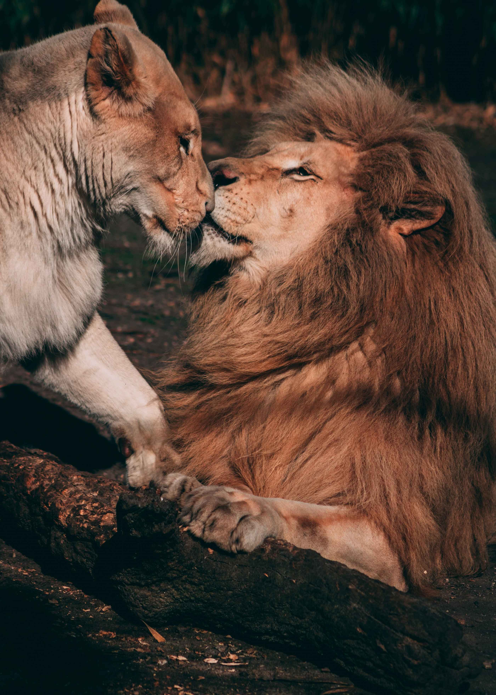

List of Animals in Dehiwala Zoo
- 
African Lion
The lion is a huge cat belonging to the Panthera genus that can be found in Africa and Asia. It has a muscular body with a deep chest, a short, rounded head, round ears, and a hairy tuft at the tail's end. It is sexually dimorphic, with adult male lions being larger and having a prominent mane than females.
Bengali Tiger
The Bengal tiger, sometimes known as the Royal Bengal tiger, is a tiger belonging to a subspecies of Panthera tigris tigris unique to the Indian subcontinent. Poaching, habitat loss, and fragmentation are all threats to this species, which was estimated to have less than 2,500 wild individuals in 2011.
Flamingo
Flamingos, often known as flamingos, are a species of wading bird belonging to the Phoenicopteridae family, which is the sole one in the order Phoenicopteriformes. Two flamingo species are endemic to Africa, Asia, and Europe, while four species are found throughout the Americas, including the Caribbean.
Panda
A animal native to South Central China, the giant panda is also known as the panda bear. It is distinguished by its rotund physique and bright black-and-white coat. To distinguish it from the red panda, a neighboring musteloid, the name "big panda" is sometimes used.
Giraffe
The giraffe is the tallest living terrestrial animal and the largest ruminant. It is an African artiodactyl mammal. Giraffa camelopardalis is typically thought to be a single species having nine subspecies.

Rhinoceros
A rhinoceros, sometimes known as a rhino, is any of the five extant species of odd-toed ungulates in the Rhinocerotidae family. Two of the extant species are found in Africa, while the other three are found in South and Southeast Asia.
Deer
Deer, often known as real deer, are ruminant mammals with hooves that belong to the Cervidae family. The Cervinae, which includes the muntjac, elk, red deer, and fallow deer, and the Capreolinae, which includes the reindeer, white-tailed deer, roe deer, and moose, are the two primary deer families.

Koala bear
In the southern portion of its range (Victoria), the koala is 60 to 85 cm (24 to 33 inches) long and weighs up to 14 kg (31 pounds), but only about half that in subtropical Queensland to the north. The body is sturdy and gray, almost tailless, with a pale yellow or cream-colored chest and mottling on the rump.